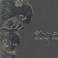

Celtic Lyrics Corner > Artists & Groups > Enya > On My Way Home > I May Not Awaken
|  | I May Not Awaken |
| Credits : | Enya; lyrics by Roma Ryan |
| Appears On : | On My Way Home (single) |
| Language : | English |
Lyrics :
When the warmth of the day becomes the night
Who could sleep beneath a strange moonlight?
No guiding star, so far from home
Walked the way o'promise to find but snow
Throughout, the voice of the winds brings nothing more
Than low echoes, so far from home
Even from a child, a wish is not enough
For me, for me the sky may fall
And even from a child, a dream is not enough
Could be, could be the sky may fall
Could be, could be the night ends all
No rains could weep as I have wept
To know a simple dream will not be kept
I am a child, so far from home
One by one the sky falls, I may not awaken